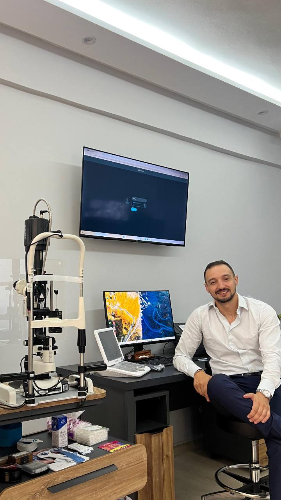

OPHTALMOLOGIE · CASABLANCA
Un regard attentif
sur votre vision.
Votre santé visuelle mérite toute notre attention. Découvrez le cabinet et préparez votre prochaine consultation en toute simplicité.
Votre cabinet d’ophtalmologie
à Casablanca, Maroc
à Casablanca, Maroc
AU CŒUR DU CABINET

La santé des yeux.
Une attention au quotidien.
Une attention au quotidien.
Un espace dédié à votre santé visuelle.
Découvrir01 / LE MÉDECIN
Prendre le temps
de bien vous voir.
Le Dr Marmech Ilias vous accueille dans son cabinet d’ophtalmologie, au sein de la résidence Al Manzah à Casablanca.
Ce site vous permet de découvrir les lieux avant votre venue et de retrouver les informations pratiques pour organiser votre consultation.
Dr Marmech IliasCabinet d’ophtalmologie · Casablanca
MÉDECINE & CHIRURGIE DE L’ŒIL
Les pratiques
du cabinet.
Du suivi de la vision aux soins spécialisés, découvrez les domaines d’activité du Dr Marmech Ilias.
Maladies rétiniennes et glaucome
Chirurgie réfractive, laser et strabisme
Contactologie, OCT et angiographie
02 / LA CONSULTATION
Votre vision,
au centre de l’attention.
Un premier rendez-vous ou un suivi ?
Préparez les éléments utiles à votre visite pour faciliter l’échange avec le médecin.
01
Faire le point
sur votre vision
Notez les changements que vous avez remarqués et les questions que vous souhaitez poser pendant la consultation.
02
Rassembler
vos documents
Pensez à vos ordonnances, vos comptes rendus et vos lunettes actuelles, ainsi qu’aux références de vos lentilles si vous en portez.
03
Préparer
votre suivi
Apportez les résultats de vos précédents examens et la liste de vos traitements pour les partager avec votre médecin.
Quelques repères pour venir l’esprit tranquille.
03 / LE CABINET
Avant votre visite,
faites connaissance avec les lieux.
Des espaces lumineux, des matières naturelles et une place pour chaque étape de votre visite.
Le cabinet, en images. Photographies des lieux et du médecin.
LES AVIS GOOGLE
Les mots
des patients.
Une sélection d’avis publiés sur Google Maps, pour découvrir l’expérience partagée par les patients.
BON À SAVOIR
Votre visite,
tout simplement.
Les réponses aux questions pratiques
avant de venir au cabinet.
Comment prendre rendez-vous ?
Pour convenir d’un rendez-vous, contactez le cabinet au 05 21 44 44 30 ou au 06 63 84 98 48.
Que faut-il apporter à la consultation ?
Vos lunettes, les références de vos lentilles, vos ordonnances et les résultats de vos examens précédents. Pensez aussi à la liste de vos traitements en cours et à vos documents de couverture médicale, si vous en disposez.
Où trouver le cabinet ?
Le cabinet se situe à la résidence Al Manzah, GH1 n°46, 1er étage, appartement n°2, boulevard Abdelkader Sahraoui, à Casablanca. Retrouvez le lien de recherche de l’adresse ci-dessous.
04 / CONTACT & ACCÈS
Au plaisir
de vous accueillir.
Retrouvez les informations utiles
pour organiser votre venue au cabinet.
Nous trouver
Résidence Al Manzah, GH1 n°46, 1er étage, appartement n°2, boulevard Abdelkader Sahraoui — Casablanca 20660
Adresse précise à renseigner
Voir sur Google MapsNous contacter
05 21 44 44 30
Appeler le cabinet Rendez-vous par WhatsAppLes coordonnées seront ajoutées prochainement.
Les horaires
Lundi – vendredi09:00 – 18:00
Samedi09:00 – 13:00
DimancheFermé
Jours fériés : horaires à confirmer.